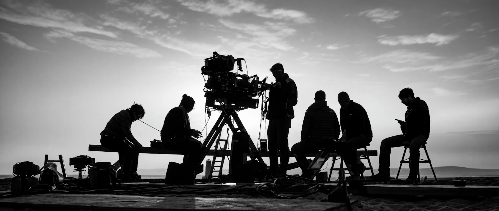
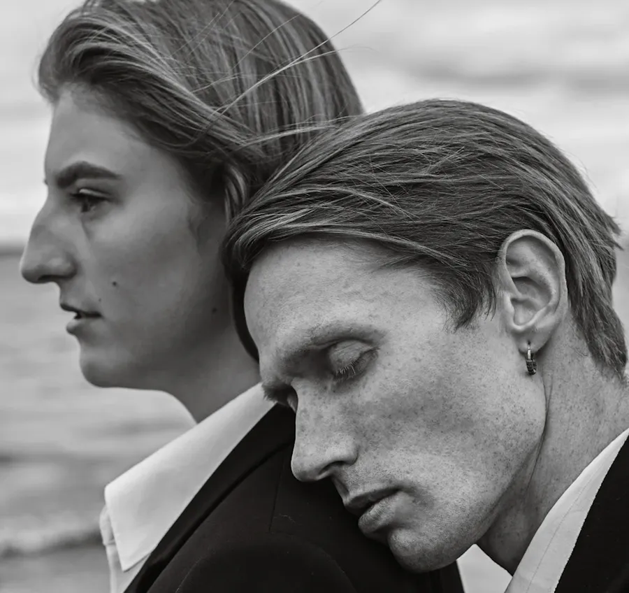
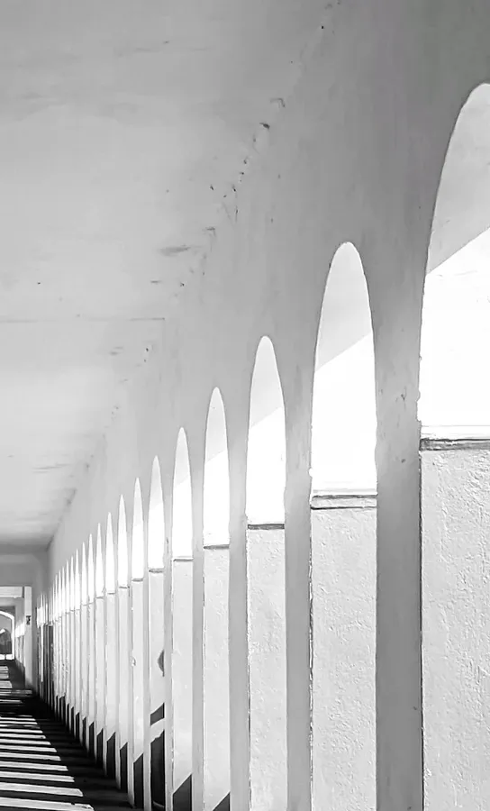
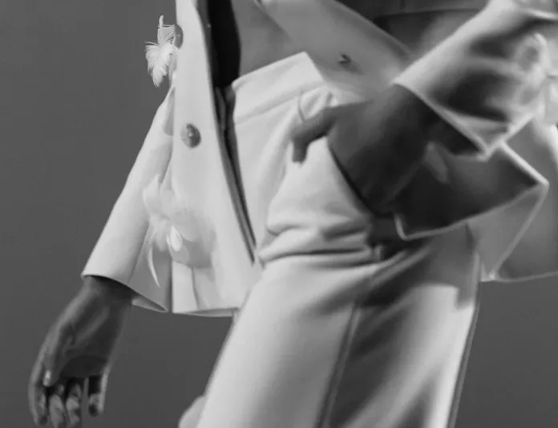
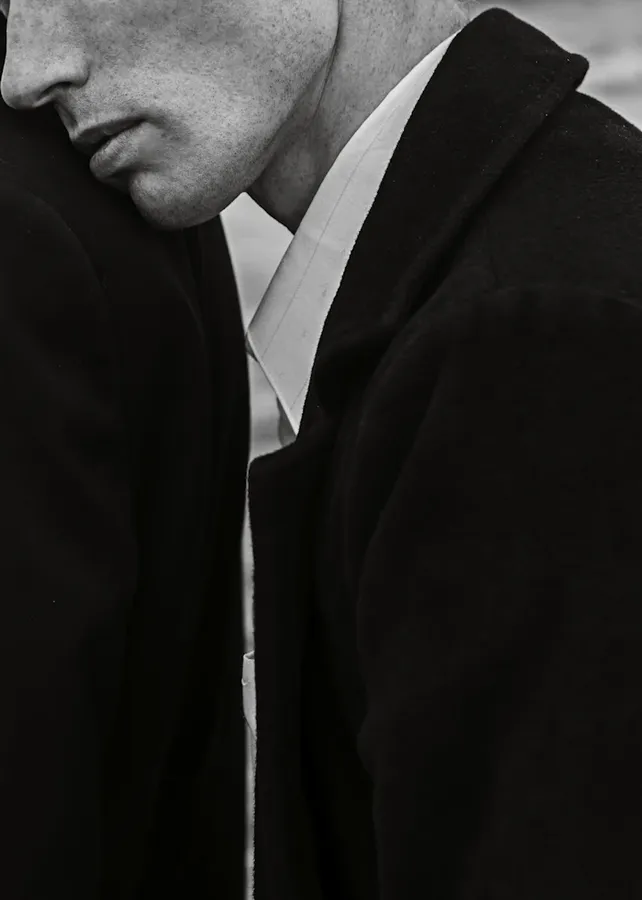

KAIRO
Twenty-four decisions a second.
Short. Concrete. A reference, a date, a reason. We say no quickly and yes carefully.
We are nine people in a former print shop in Kreuzberg. We write, shoot and finish fashion films, music videos and commercials, and every year we make one documentary nobody asked for. We shoot on 16 mm when a film needs grain and on digital when it needs the dark. We finish in black and white more often than clients expect.
 02
Low Tide
Ferro Vahl — Nord RecordsMusic video · Production
2025
Super 16
02
Low Tide
Ferro Vahl — Nord RecordsMusic video · Production
2025
Super 16
 03
Cold Light
HaldenCommercial · Production, post
2025
Digital LF
03
Cold Light
HaldenCommercial · Production, post
2025
Digital LF
 04
Block 9
Self-producedDocumentary · 61 min
2024
16 mm + DIG
04
Block 9
Self-producedDocumentary · 61 min
2024
16 mm + DIG
 05
Arcade
VerreCommercial · Direction
2024
Anamorphic
05
Arcade
VerreCommercial · Direction
2024
Anamorphic
 06
Nachtschicht
Lune Halvorsen — Nord RecordsMusic video · Production
2023
Digital
06
Nachtschicht
Lune Halvorsen — Nord RecordsMusic video · Production
2023
Digital

Frames
we kept
Forty-one thousand feet of negative went through the gate this year. These are the frames that made it onto the wall above the edit suite.
Contact strip — scroll to advancecamera.A-07 — 400 ft


& digital
Negative is processed in Berlin and scanned at 4K across the canal. Digital rushes are graded the same night.






Nothing leaves
the building
unfinished.
Treatment, camera, edit, grade and sound happen under one roof by the Landwehr Canal. The person who lit your film sits next to the person who grades it.
Small crews by choice: twelve people on most commercials, four on a music video, two on a documentary.
Meet the nine & the buildingHow a film
gets made here
- Day 0
Brief
You send a reference, a date and a reason. We answer within two working days: yes, no, or one good question.
2 days - Day 1–5
Treatment
One director writes it. Ten pages, our own stills, a shot list. No mood boards made of other people’s films.
5 days - Week 2–4
Prep
Casting, locations, wardrobe, a stock test on every film. Lenses chosen for the face, not the spec sheet.
2–3 weeks - Shoot
Camera
One to three days. We rehearse with the camera running and keep the take where something went slightly wrong.
1–3 days - Post
Cut & grade
Edit, grade, sound and conform in-house. You see the first cut on day four, and every cut after that in the room.
2–3 weeks - Delivery
Masters
Masters, cut-downs and stills, delivered to spec. Negatives are archived for ten years in a cold room in Wedding.
1 day